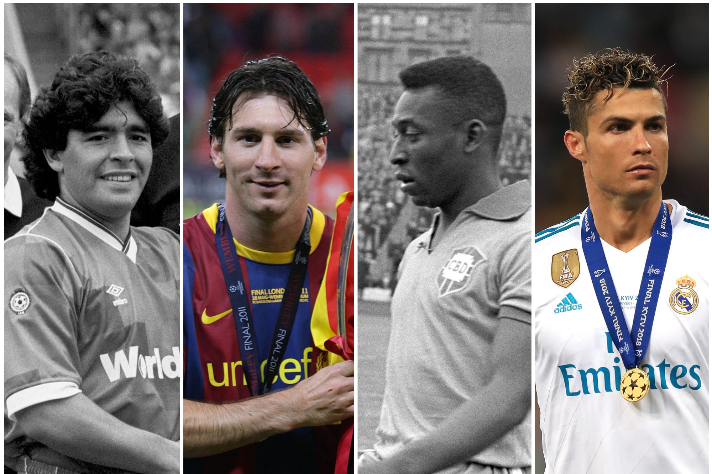

The Path to Becoming a Pro — how the journey to becoming a professional soccer player has changed over history.

Players started on the street. Pelé grew up very poor in Brazil and practiced with a rolled-up sock filled with paper, since he had no money for a real ball. A scout found him by luck and he became a professional at age 15. Maradona learned all his famous dribbling skills on dirty streets in Argentina. Back then, there were no big training centers — players became superstars because of natural talent and passion.
Lionel Messi was scouted at age 12 and his first contract with FC Barcelona was famously written on a simple paper napkin because the club wanted him immediately. Cristiano Ronaldo left his family at age 12 to live and train at a professional academy.
Now, street soccer is not enough. Kids must join a professional youth academy when they are 8 or 10 years old. The lifestyle is like a real job — young players have strict training plans, special food and doctors. Modern soccer is much faster, so clubs look for perfect athletes.
Becoming a professional is much harder today than in the past. You need talent, but you also need extreme discipline and a perfect athletic education to make it to the top.